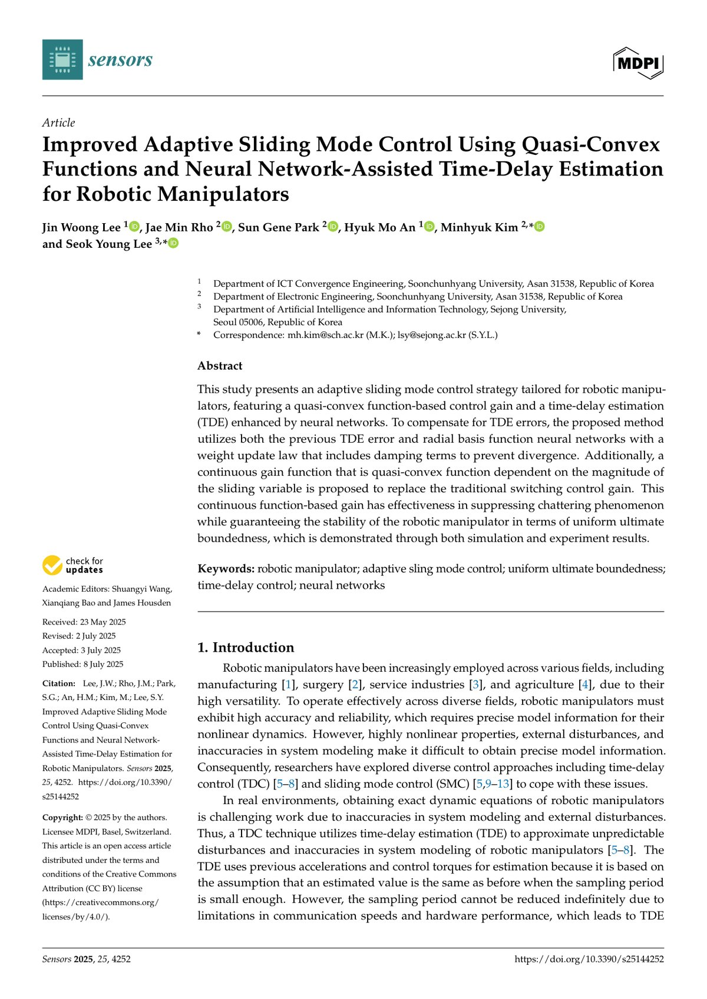
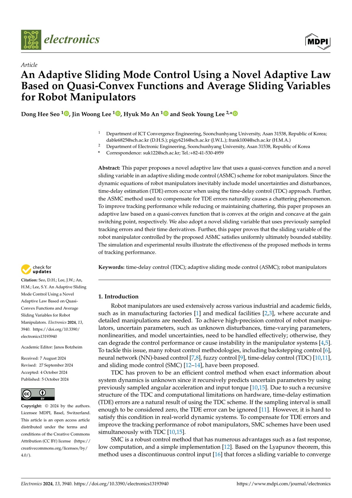
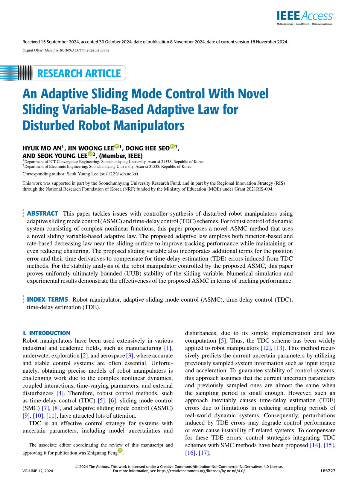
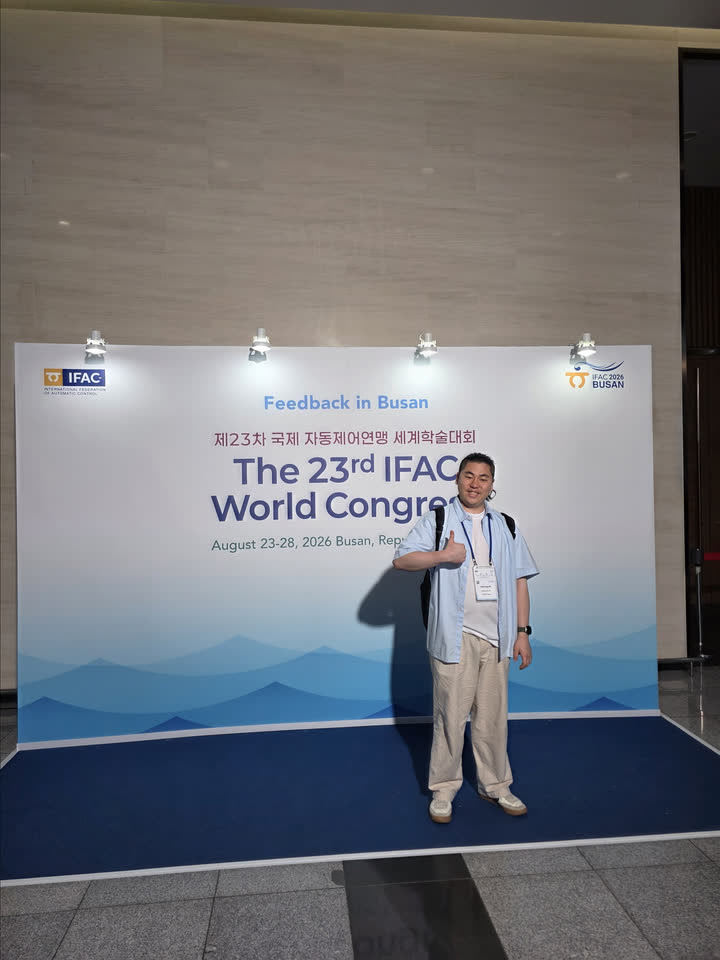
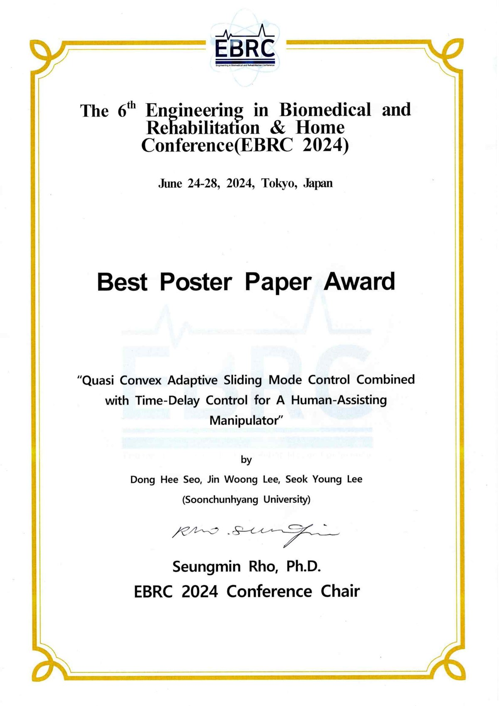

About
I build robust and adaptive sliding mode controllers for robot manipulators, with interests in time-delay estimation and neural-network-based methods.
Publications

Sensors 2025 · First author
Adaptive SMC with NN-assisted TDE
Improved adaptive sliding mode control using quasi-convex functions and neural network-assisted time-delay estimation.

Electronics 2024 · Co-author
Quasi-convex adaptive law with average sliding variables
Adaptive sliding mode control using a novel adaptive law based on quasi-convex functions for robot manipulators.

IEEE Access 2024 · Co-author
Sliding-variable adaptive law for disturbed manipulators
Adaptive sliding mode control with a novel sliding-variable-based adaptive law for disturbed robot manipulators.
Activities

Poster · IFAC 2026
Data-driven gain tuning for SMC with TDE
Poster at the 23rd IFAC World Congress (Busan, 2026) on data-driven sliding-mode gain tuning for manipulators.

Award · EBRC 2024
Best Poster Paper Award
Quasi-convex adaptive SMC with time-delay control for a human-assisting manipulator (Tokyo, 2024).
Contact
- Email jinwoonggg@sju.ac.kr
- ORCID 0009-0008-5503-241X
- Scholar Google Scholar
- Lab ICaR Laboratory
- CV Academic CV